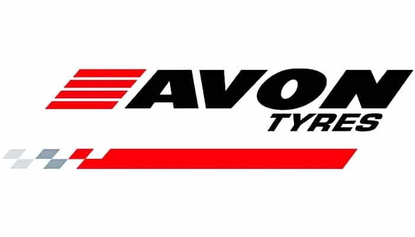
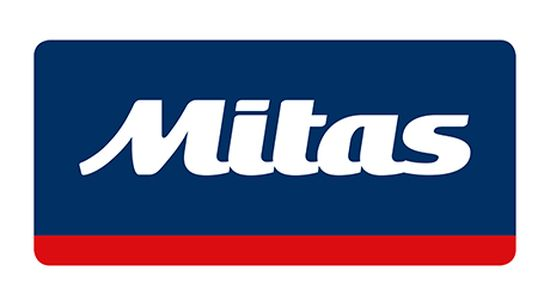
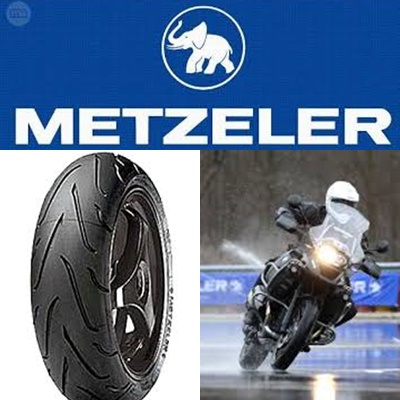
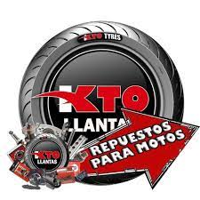
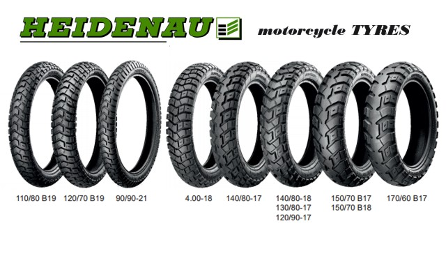

| --Llantas-- | |||||
| Avon Tyres 
Esta marca fabricó su primer neumático para moto en el año 1911, y desde entonces ha cosechado
muchos éxitos en diversas competiciones de motociclismo. Sus productos incluyen además una serie
de elementos tecnológicos que se han ido desarrollando y probando con el transcurso de los años;
y por ello pueden ofrecer distintos neumáticos para motocicletas de toda clase (touring, clásicas,
cruiser, de competición…). Son garantía de máxima calidad.
|
Mitas  Mitas es una marca que también está especializada en neumáticos de moto, sobre todo de competición. Según lo que podemos leer en su página web, “los neumáticos para motocicletas Mitas permiten a los pilotos disfrutar de la máxima aventura del motociclismo”. No solo ofrecen una variedad de neumáticos de alta calidad, sino también de tubos de escape. Tiene neumáticos para todo tipo de motocicletas: scooters, motos de carretera, motos de montaña…. |
||||
| Metzeler 
Esta empresa alemana es más que conocida en el mundo de los neumáticos, y desde luego no es por casualidad.
Puede ser que se trate de una de las marcas que más modelos para cada variedad de neumático ofrecen, y esto
se puede comprobar fácilmente en su página web oficial. Cuando nos metemos en la sección de neumáticos de
moto y scooter, tenemos una gran cantidad de modelos clasificados en distintas categorías: desde las de
competición hasta los de aventura y turismo.
|
Kyoto ´
La marca japonesa siempre se ha caracterizado por ofrecer productos de primerísima calidad, y se especializa
sobre todo en neumáticos para coche y para moto. Encontraremos neumáticos de motos de todo tipo, pero sobre
todo son especialmente buenos en neumáticos para motocicletas de motocross. En cualquier caso, también podemos
encontrar buenos neumáticos para motos de carretera.
|
||||
| Heidenau 
Empezaron su andadura en el mundo de los neumáticos de moto en el año 1946, y se han mantenido en lo
más alto en la oferta para todos los tipos de motocicleta que existen. También ofrecen neumáticos de
coche y de kart, pero sobre todo son expertos en los de moto. Son productos de excelente calidad, y
aunque no tenga página web oficial en español, se pueden encontrar fácilmente a través de mercados online.
|
Dunlop
Todos conocemos a la famosísima empresa británica Dunlop, pero lo que poca gente sabrá es que, aparte
de una marca de ropa, es también una marca de neumáticos, que tiene modelos para todos los tipos de motos
que existen. De hecho, destaca por la excelente calidad de los mismos en el caso de las motos, ya que
con ellos motoristas han ganado grandes competiciones. Además, tienen un acuerdo desde 1983 con la famosa
compañía de motos Harley-Davidson. Esto ya nos da una muestra de lo que significa tener estos neumáticos.
|
||||
| Bridgestone
Sin duda alguna es una de las superpotencias de los neumáticos de coche y moto a nivel mundial.
Tener unos buenos neumáticos en nuestra moto de la firma japonesa Bridgestone sin duda nos dará
un alto estatus. Sus neumáticos Premium nos servirán para todo tipo de motos: de carretera, de
motocross, de competición… y serán siempre de una calidad sobresaliente. Comprar un producto de
esta empresa es una gran opción.
|
Continental
El famoso caballo alemán reclama el primer puesto en el podio y lo consigue muy merecidamente.
Son neumáticos de alta tecnología, con una calidad fuera de serie, y están disponibles para todo
tipo de motos: de carretera, de competición, de motocross… Son resistentes, suelen tener un muy
buen agarre en mojado y permiten una excelente maniobrabilidad. Son muy completos, y por ello, recomendables al 100%.
|
||||
Pirelli 
Esta marca italiana, ahora propiedad china, cuenta en su gran catálogo posiblemente con los neumáticos
más innovadores tecnológicamente hablando. Es uno de los más importantes patrocinadores de las carreras
más importantes del motociclismo, por lo que no es de extrañar que sus neumáticos estén instalados en las
motos de grandes competidores. Sin embargo, también ofrecen neumáticos para motos del día a día: scooters,
motos de carretera.
|
Michelin
Nuestra más sincera enhorabuena a la conocidísima marca francesa, que se queda con el primer puesto, tras
una dura batalla con las dos firmas anteriores en la lista, pero sobre todo con Pirelli. Tienen neumáticos
para todo tipo de motos: de aventura, de touring, de carretera, de competición… y además en su página web,
nada más entrar en el apartado de neumáticos de moto, nos aparece un buscador muy intuitivo que sirve para
recomendarnos el ideal basándose en la marca de nuestro vehículo. Y es que pongan las cosas fáciles siempre gusta.
|
||||
| Fuente: Elaboración propia a partir de datos recolectados (2021). | |||||